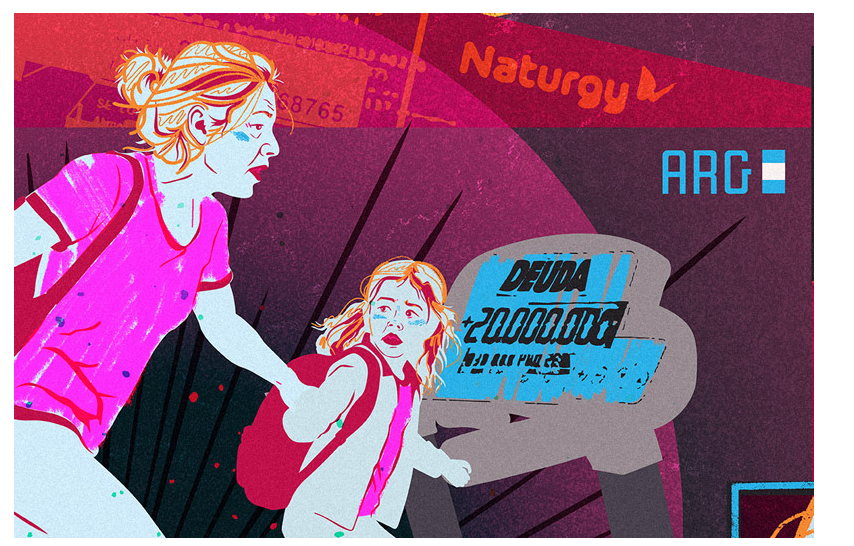
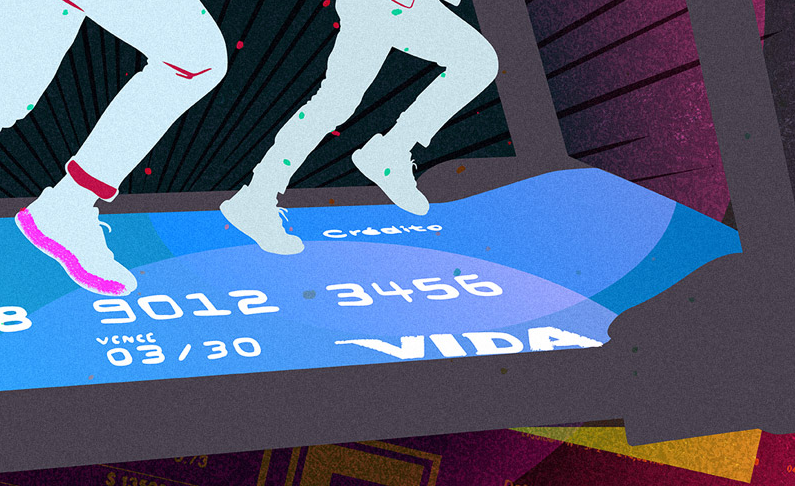

Cada vez que una familia argentina no puede pagar lo que debe, pasa algo más que un número en rojo en su presupuesto. Pasa algo político. Se activa una pregunta que estuvo suspendida, que muchas veces se evitó formular, pero que en algún momento encuentra su camino: ¿quién tiene la culpa de que yo no pueda pagar?
El Banco Central de la República Argentina publicó un dato que pronto repercutió en los medios. La mora en el financiamiento pasó de 2,5% en diciembre de 2024 a 9,3% en diciembre de 2025. En marzo de 2026 —el registro más reciente— trepó al 11,5%: una cifra que no se observaba desde hace más de veinte años. En doce meses, la irregularidad de los créditos a hogares se triplicó, con un incremento de 8,3 puntos porcentuales. Los préstamos personales concentran el mayor nivel de incumplimiento en quince años. Y el deterioro no se limita al sistema bancario: en las billeteras virtuales y entidades financieras no bancarias —a las que recurren quienes el banco ya no les presta— la morosidad supera el 30%.
Los datos de mora de las familias argentinas durante el gobierno de Javier Milei siguen una curva que los economistas registran con sus instrumentos pero que las ciencias sociales deben interpretar con otros. No alcanza con decir que sube la morosidad en tarjetas, que se acumulan deudas de expensas y servicios, que los planes de pago se estiran hasta el absurdo. Lo que hay que entender es qué tipo de deuda es esa. Porque no todas las deudas son iguales, y la historia argentina lo demuestra con claridad: cada régimen político produjo su propio régimen de endeudamiento familiar, con sus promesas, sus trampas y sus consecuencias electorales.
El trampolín
Para entender la trampa, hay que entender primero el trampolín.
Milei llegó al poder montado sobre un estado de ánimo colectivo que tenía nombre propio en las encuestas: agotamiento moral. No era simplemente la pobreza, ni la inflación sola, ni la devaluación. Era algo más preciso: la sensación de haber hecho todo bien —trabajar, ahorrar, sacrificarse— y que aun así no alcanzara. La percepción de correr en el lugar, de esforzarse sin que el esfuerzo rindiera fruto.
En 2023, cuando se medían las intenciones de voto, ocho de cada diez argentinos acordaban con una afirmación demoledora: "Ante los problemas de la inflación, dependemos de nuestro esfuerzo y sacrificio." Casi la misma proporción sostenía que se mataban de tanto trabajar y la inflación de todas formas no les permitía llegar a fin de mes. Estos números eran más altos entre quienes ya habían votado a Milei en las primarias.

El electorado de Milei es más complejo que cualquier retrato unívoco: cruzó clases sociales, generaciones y geografías. No se puede trazar una línea directa entre quién debía y quién votó. La deuda de sacrificio no produce votos: produce un estado de ánimo, una plausibilidad moral. Vuelve pensable lo que antes parecía impensable. Y lo que las encuestas de 2023 mostraban con consistencia es que ese estado de ánimo estaba extendido transversalmente: personas que habían pedido prestado para comer y personas de clase media que habían visto multiplicarse sus cuotas hipotecarias sin control compartían algo más profundo que una condición económica. Compartían la sensación de que el esfuerzo propio no encontraba retorno institucional. Que las deudas que cargaban no eran el precio de algo —no eran el escalón hacia ningún lugar. Eran simplemente el precio de permanecer en el lugar. Para no caer.
Eso es la deuda de sacrificio: deuda sin aspiración. Deuda que no te lleva a ningún lado. Deuda que es el precio de sobrevivir.
La previa
Para leer la mora de hoy hay que hacer un ejercicio que los titulares económicos no hacen: excavar. La deuda de sacrificio tiene capas. Cada una depositó algo que todavía está ahí, acumulado, sin resolver.
La primera capa es el macrismo. El crédito UVA —el instrumento hipotecario que prometía hacer accesible la vivienda— fue la trampa más sofisticada de ese período. Diseñada para un mundo de inflación baja y estable, explotó cuando el peso se derrumbó en 2018 y el FMI volvió con sus condiciones. Entre 2016 y 2019, el índice que actualizaba esas hipotecas subió 227% mientras los salarios formales crecían a la mitad de esa velocidad. Sandra había firmado su hipoteca en 2017 creyendo que la inflación bajaría. No bajó. “Préstamos, impuestos, colegio, mercado. No nos quedaba nada.” Carla, que había ahorrado ocho años para comprar su departamento, trabajaba quince horas diarias seis meses después de firmar. "Pagamos pero debemos más." Esa deuda —la de la promesa traicionada— no desapareció con el cambio de gobierno. Se sedimentó.
La segunda capa es la pandemia. El aislamiento sanitario eliminó de un día para el otro el ingreso de millones de trabajadores informales. El alquiler no esperó. La comida no esperó. Los servicios no esperaron. El Estado asistió, pero con un margen fiscal ya comprometido por la deuda soberana que renegociaba con el FMI. Lo que no cubrió la política lo cubrieron los hogares: con fiado en el almacén, con préstamos entre familiares, con tarjetas giradas hasta el límite. Mónica pedía prestado a una agencia estatal para pagar la fiada del almacén y así poder seguir comprando fiado la semana siguiente. "Un círculo del que no se puede salir." La pandemia no creó la deuda de sacrificio, pero la volvió masiva. Convirtió una tendencia en una condición estructural.
La tercera capa es la inflación del kirchnerismo tardío y el gobierno de Alberto Fernández. Leonardo, docente, lo describe con precisión: había pasado de endeudarse para comprar electrodomésticos —la vieja deuda de la inclusión que el kirchnerismo había promovido como símbolo de pertenencia— a endeudarse para comprar comida. El mismo instrumento, la tarjeta, el crédito, había cambiado de sentido. Ya no era el escalón hacia algo mejor. Era el parche para no caer. Ricardo, comerciante, llamaba a sus deudas "deudas de empobrecimiento": lo opuesto de todo aquello para lo que había trabajado. Con una inflación que superó el 90% en 2022 y el 200% en 2023, las deudas acumuladas en los años anteriores no se disolvieron. Se compusieron.
Lo que define a este régimen de deuda no es solo su magnitud. Es su sentido acumulado. La deuda aspiracional —la que te permite comprarte una heladera, pagar la cuota del auto, planificar las vacaciones— crea un vínculo entre el esfuerzo presente y una promesa de futuro. La deuda de sacrificio es exactamente lo contrario: no te lleva a ningún lado. Es el precio de permanecer en el lugar. Y cuando esa experiencia se repite capa tras capa, gobierno tras gobierno, algo se rompe en la relación entre los hogares y la política.
El deudor de sacrificio siente que hizo todo lo que se suponía que debía hacer y que el Estado, la política, los gobernantes —todos, no uno en particular— no cumplieron su parte. Esa asimetría genera algo más que frustración: genera una superioridad moral sobre la clase política. "Nosotros nos arreglamos solos. Ellos no hicieron nada." Y esa superioridad moral es exactamente lo que Milei supo leer, nombrar y capitalizar.
El candidato
La campaña de Milei fue, en el sentido más preciso de la palabra, una campaña sobre el sacrificio. Tradujo en lenguaje político algo que los hogares argentinos vivían en su economía doméstica: la sensación de que el sacrificio individual no encontraba contrapartida en el Estado, y de que ese Estado era en sí mismo el obstáculo.
La propuesta de la motosierra no era solo un programa económico: era una promesa de reciprocidad invertida. Si durante años las familias habían sacrificado mientras los políticos derrochaban, ahora los políticos también iban a sacrificar. La casta pagaría. El ajuste sería hacia arriba.
Hay una lógica interna en ese argumento que no puede desestimarse. El sacrificio vivido individualmente, sin retorno, sin reconocimiento, se convierte en política en una demanda: que otros también sacrifiquen, empezando por el Estado y por quienes lo gobiernan. La deuda de sacrificio no determina el voto —nada en política es tan lineal. Pero contribuye a moldear un paisaje moral en el que votar por la ruptura radical deja de parecer una locura y empieza a parecer lo único razonable. Quien vivió años pagando sin que nadie respondiera podía encontrar en la motosierra no un símbolo de crueldad sino de justicia: si nosotros sacrificamos, que sacrifiquen ellos también.
La deuda de sacrificio fue el trampolín. No porque causara el voto —las cadenas causales en política son siempre más enredadas que eso— sino porque instaló el estado de ánimo desde el cual una propuesta de ruptura radical pudo volverse moralmente plausible antes de volverse políticamente viable. La experiencia financiera acumulada de millones de hogares preparó el terreno. Milei lo leyó. No fue irracionalidad. Fue una respuesta moralmente coherente a años de promesas incumplidas, encontrando su cauce en la única opción que prometía romper con todo.
La trampa
Pero aquí empieza la trampa.
El gobierno de Milei heredó, como sus antecesores inmediatos, un régimen de deuda de sacrificio. Y como todos sus antecesores, lo profundizó.
El ajuste fiscal se tradujo en quita de subsidios, aumento de tarifas y retracción del salario real. Las familias que ya se endeudaban para sobrevivir se encontraron con que los números empeoraban. La mora creció. Las tarjetas dejaron de alcanzar. Los planes de pago se multiplicaron. Los bancos registraron aumentos en los índices de incumplimiento en créditos personales y prendarios. Los informes de las cámaras de comercio minorista mostraron caída del consumo y aumento de la deuda impaga con los proveedores.
La promesa implícita del sacrificio colectivo —que el ajuste sería compartido, que la casta pagaría— chocó con una realidad más antigua y más dura: en los ajustes estructurales, quienes más pagan son siempre los que menos tienen. Las familias que habían votado esperando que otros sacrificaran descubrieron que el sacrificio seguía siendo, como siempre, el de ellas.
Hay algo particularmente cruel en esto. La deuda de sacrificio genera un tipo específico de juicio moral: no está dirigida a un gobierno en particular, sino a la capacidad institucional del Estado democrático de organizar la vida financiera de los hogares de manera compatible con su dignidad. Cuando ese juicio ya está hecho, cuando la confianza en las instituciones democráticas ya se perdió, no hay gobierno que pueda recuperarla fácilmente. Ni siquiera el que llegó prometiendo exactamente eso.
Lo que los números no dicen
Los datos de mora que circulan en los medios estas semanas se presentan como indicadores económicos. Lo son. Pero son también otra cosa: son el registro de una ruptura moral que lleva décadas construyéndose y que Milei, lejos de resolver, ha extendido bajo una nueva promesa. Su aparición repentina en la agenda pública no es casual: cuando la deuda de los hogares sube hasta hacerse visible para los medios, es porque ya hace tiempo que es insoportable para las familias. El debate público llega tarde. La experiencia financiera cotidiana llegó antes.

La sociología de la deuda enseña algo que la economía tiende a olvidar: el momento en que una familia no puede pagar no es solo un evento financiero. Es un momento en que se activa la pregunta sobre la responsabilidad. ¿Quién tiene la culpa? ¿El deudor que no supo administrarse? ¿El gobierno que no controló la inflación? ¿El sistema que prometió lo que no podía cumplir?
En la Argentina de hoy, esa pregunta vuelve a estar disponible. Los hogares que se endeudaron para sobrevivir durante la pandemia, que esperaron que el ajuste de Milei trajera alguna estabilidad, que ven cómo la mora se acumula sin que el horizonte se despeje, están en ese umbral moral: el momento en que el sufrimiento privado busca una explicación pública y un responsable político.
La advertencia
Hay algo que conviene decir con claridad, porque suele perderse en el análisis coyuntural: la deuda de sacrificio es anterior a Milei y le va a sobrevivir.
No la inventó él. La encontró ya instalada, la supo leer mejor que sus competidores, y la transformó en capital electoral. Pero el régimen de deuda sacrificial que describe la experiencia financiera de millones de hogares argentinos se construyó a lo largo de años —la pandemia, la inflación crónica, los salarios que no alcanzan, la informalidad estructural— y no desaparecerá con un cambio de gobierno.
Aquí está el verdadero desafío para el sistema político argentino en su conjunto, y no solo para la gestión actual: ¿será capaz de interpretar lo que la deuda de sacrificio produce en términos de juicio moral sobre las instituciones? ¿O seguirá cayendo, ciclo tras ciclo, en la misma trampa?
Cada régimen de deuda de los hogares generó sus propias expectativas, y cuando esas expectativas fueron traicionadas, la energía acumulada buscó una salida política. A veces fue una carta al presidente. A veces fue el cacerolazo. A veces fue un voto inesperado. Pero siempre llegó.
La deuda de sacrificio, cuando no encuentra respuesta en la política democrática, no desaparece: se radicaliza. Genera la sensación de que el esfuerzo individual fue real pero la contraparte institucional nunca existió. Y esa sensación —la de haber sido estafado por el sistema, no por un gobierno— es la más corrosiva de todas, porque ya no interpela a un presidente sino a la democracia misma.
La pregunta que queda abierta —y que los datos de mora de estas semanas vuelven urgente— es si habrá una nueva respuesta la próxima vez, o si el ciclo se repetirá con otro nombre y otra motosierra.

Lectura Activa & Comentarios